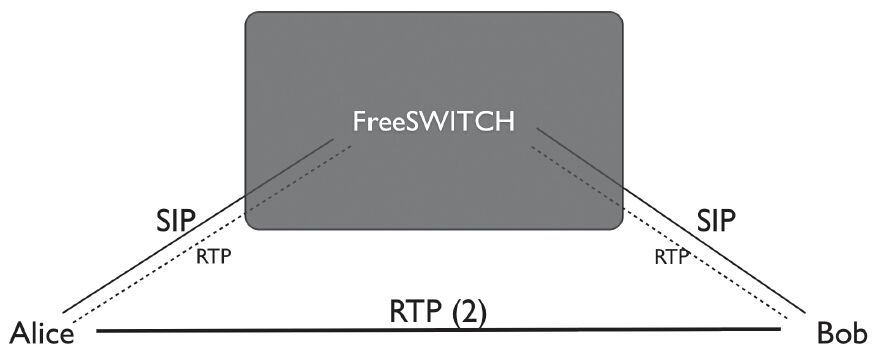
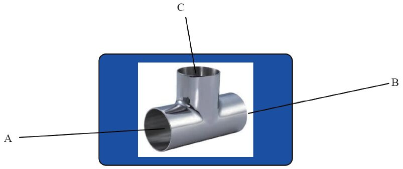
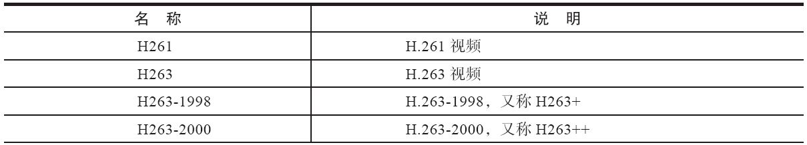
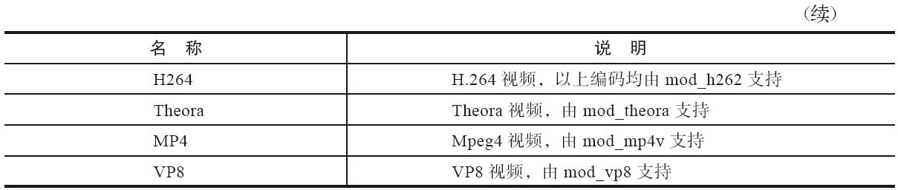

8.3 其他媒体相关的问题
FreeSWITCH有很强的媒体处理能力，也支持非常灵活的配置。下面我们再讲几个与媒体有关的概念及相关知识。
8.3.1 RTP和RTCP
在完成SIP及SDP协商后，真正的语音数据是在RTP协议中传送的。即双方在前面的SDP协商中都已经获得了对方的IP地址、端口号，以及支持的媒体类型。接下来，就是将本地的媒体数据以指定的编码格式进行编码并通过RTP协议发送到对方去。
RTP [1] 协议的全称是Real-time Transport Protocol，即实时传输协议，它是由IETF的多媒体传输工作小组在RFC 3550 [2] 中定义的。RTP协议详细说明了在互联网上传递音频和视频的标准数据包格式。它一开始被设计为一个多播协议，但后来被用在很多单播应用中。RTP协议是建立在UDP协议之上的，常用于流媒体系统、视频会议和一键通（Push to Talk）系统（配合H.323或SIP），它已成为IP电话产业的技术基础。
RFC 3550中规定的RTP封包格式如下：
0 1 2 3
0 1 2 3 4 5 6 7 8 9 0 1 2 3 4 5 6 7 8 9 0 1 2 3 4 5 6 7 8 9 0 1
+-+-+-+-+-+-+-+-+-+-+-+-+-+-+-+-+-+-+-+-+-+-+-+-+-+-+-+-+-+-+-+-+
|V=2|P|X| CC |M| PT | sequence number |
+-+-+-+-+-+-+-+-+-+-+-+-+-+-+-+-+-+-+-+-+-+-+-+-+-+-+-+-+-+-+-+-+
| timestamp |
+-+-+-+-+-+-+-+-+-+-+-+-+-+-+-+-+-+-+-+-+-+-+-+-+-+-+-+-+-+-+-+-+
| synchronization source (SSRC) identifier |
+=+=+=+=+=+=+=+=+=+=+=+=+=+=+=+=+=+=+=+=+=+=+=+=+=+=+=+=+=+=+=+=+
| contributing source (CSRC) identifiers |
| .... |
+-+-+-+-+-+-+-+-+-+-+-+-+-+-+-+-+-+-+-+-+-+-+-+-+-+-+-+-+-+-+-+-+
一般来说，在没有任何扩展的情况下，RTP包头的长度为12字节。其中主要字段的含义简介如下：
·version(V)：1 bit。标明RTP版本号。RFC3550中规定的版本号为2。
·padding(P)：1 bit。如果该位被设置，则将在该packet末尾包含额外的附加信息，附加信息的最后一个字节表示额外附加信息的长度（包含该字节本身）。该字段之所以存在是因为一些加密机制需要固定长度的数据块，或者为了在一个底层协议数据单元中传输多个RTP packets。
·extension(X)：1 bit。如果该位为1，则在固定的头部后存在一个扩展头部，格式定义在RFC3550中。
·CSRC count(CC)：4 bit。在固定头部后存在多少个CSRC标记。
·marker(M):1 bit。该位的功能依赖于RTP中实际传输媒体类型的Profile的定义。Profile可以改变该位的长度，但是要保持marker和payload type总长度不变（一共是8 bit）。一般来说，音频跟视频中该位的定义是不同的。在视频中，marker值为1通常表示一帧图像的结束 [3] 。
·payload type(PT)：7 bit。标记着RTP packet所携带信息的类型，标准类型列在RFC3551中。如果接收方不能识别该类型，必须忽略该包。
·sequence number：16 bit。序列号，每个RTP包发送后该序列号加1，接收方可以根据该序列号检测丢包或重新排列数据包顺序等。
·timestamp：32 bit。时间戳。反映RTP包中所携带信息包中第一个字节的采样时间。
·SSRC：32 bit。数据源标识。在一个RTP Session期间每个数据流都应该有一个不同的SSRC。如果视频源发生变化，则应该改变SSRC，以让接收端感知到该变化。
·CSRC list：0到15项，每个源标识为32 bit。贡献数据源标识。只有存在多路混发的时候才有效。多路混发的情况，如一个将多声道的语音流合并到一个RTP流中发送，在这里就可以列出原来每个声道的SSRC。
实时传输控制协议 [4] （Real-time Transport Control Protocol或RTP Control Protocol，RTCP）是实时传输协议（RTP）的一个姊妹协议，前者由RFC 3551 [5] 定义。RTP使用一个偶数UDP端口，而RTCP则使用RTP的下一个相邻的奇数端口。RTCP除为RTP媒体流提供信道外（out-of-band）的控制。RTCP本身并不传输数据，但会和RTP一起协作将多媒体数据打包并发送出去。RTCP定期在多媒体会话参加者之间传输控制数据。RTCP的主要功能是为RTP提供的服务的质量（Quality of Service）提供反馈信息。RTCP收集相关媒体连接的统计信息，例如传输字节数、传输分组数、丢失分组数及拉动（jitter）、单向和双向网络延迟等等，网络应用程序即可利用RTCP的统计信息来控制传输的品质，比如当网络拥塞比较严重时，可以限制信息流量或改用压缩率较高的编解码器。
8.3.2 转码
FreeSWITCH是一个B2BUA，因而在桥接两条腿时，如果两条腿分别使用不同的编码，则需要经过一个转码过程分别转成对方需要的编码。
当需要转码时，FreeSWITCH会将收到的音频数据转成一种中间格式，称为L16，即线性16位的编码。这种格式可以与其他各种编码进行转换。
另外，即使呼叫的双方采用同样的编码，但如果有IVR或录、放音等中间环节时，也需要转码。
有一些编码，如G729，由于专利原因，不能自由使用，因此FreeSWITCH默认不支持对它的转码。如果确实需要转码，则可以购买商业版的转码模块。
FreeSWITCH默认的配置（本例中的配置基于FreeSWITCH 1.2.11+git~20130720）不支持自动转码，笔者用默认的配置做了一个实验，A呼叫B，A端只有PCMA，B端只支持PCMU，而FreeSWITCH使用默认的编码，即“G722,PCMU,PCMA,GSM”。A端呼叫到达FreeSWITCH后，FreeSWITCH又向B发送INVITE，其中的SDP如下：
1 v=0
2 o=FreeSWITCH 1374385260 1374385261 IN IP4 192.168.7.8
3 s=FreeSWITCH
4 c=IN IP4 192.168.7.8
5 t=0 0
6 m=audio 21582 RTP/AVP 8 101 13
7 a=rtpmap:101 telephone-event/8000
8 a=fmtp:101 0-16
9 a=ptime:20
可以看出，FreeSWITCH提供的编码类型只有8（第6行，其中8代表PCMA，后面的101和13，分别代表RFC2833和静音包支持，不是实际的音频编码），而由于B端仅支持PCMU，所以协商失败，对方返回488消息，表示没有找到兼容的媒体类型。在笔者测试中收到的488消息内容如下：
SIP/2.0 488 Not Acceptable Here
Via: SIP/2.0/UDP 192.168.7.8;rport=5060;branch=z9hG4bKH1t8Fv9Xr7XgK
To: <sip:1002@192.168.7.8:51570;rinstance=59ddd96a3228b9f6>;tag=95be460b
From: "Extension 1000"<sip:1000@192.168.7.8>;tag=QQaKDZ709NHtF
Call-ID: 36dd7df4-6c9d-1231-82ad-cb44f52397c6
CSeq: 46867357 INVITE
User-Agent: Bria 3 release 3.5.0b stamp 69410
Warning: 305 devnull "SDP: Incompatible media format: no common codec"
Content-Length: 0
其中的Warning是一个可选的消息头，SIP终端（这里是Bria）带了这个消息头便于我们查找问题原因。
最后，经过实验笔者发现，如果要使协商成功，只需要在internal Profile里将下面一行注释掉：
<param name="inbound-zrtp-passthru" value="true"/>
需要将该Profile重启使之生效，重启命令如下：
freeswitch> sofia profile internal restart
读者也可以看一下重启前后该配置项的区别（省略其他输出，中文注释为笔者所加）：
freeswitch> sofia status profile internal
Name internal
ZRTP-PASSTHRU true #
重启前
----------------------------------------------------------
ZRTP-PASSTHRU false #
重启后
尝试再打一个电话，可以看到，这次FreeSWITCH向B提供的编码列表就多了。下面是FreeSWITCH发给B的INVITE消息中的SDP部分：
v=0
o=FreeSWITCH 1374381088 1374381089 IN IP4 192.168.7.8
s=FreeSWITCH
c=IN IP4 192.168.7.8
t=0 0
m=audio 26076 RTP/AVP 8 9 0 3 101 13
a=rtpmap:101 telephone-event/8000
a=fmtp:101 0-16
a=ptime:20
其中，“8 9 0 3”分别代表PCMA、G722、PCMU、GSM，由于A提供的编码是PCMA，而FreeSWITCH提供的列表是G722、PCMU、PCMA、GSM，基于FreeSWITCH默认的协商策略（generous），FreeSWITCH在向B发送SDP的时候，尊重客户端A的选择，因此将PCMA排在了最前面，最后的列表成了PCMA、G722、PCMU、GSM。这时候B收到INVITE请求后，由于它仅支持PCMU，因此它在后续的200消息中告诉FreeSWITCH，FreeSWITCH将电话接通后，A便向FreeSWITCH发送PCMA编码的RTP媒体流，FreeSWITCH在收到后会自动转换为PCMU格式的媒体流并发送给B。同理，B向FreeSWITCH发送PCMU，FreeSWITCH转成PCMA再发给A。也就是说，FreeSWITCH可以在A与B端编码不同的情况下进行自动编码转换，简称转码。
通过该例子读者应能了解到，FreeSWITCH使用该协商策略的好处是，由于FreeSWITCH做SDP Offer的时候把PCMA放到了最前面，如果B同时也支持PCMA，而且也采取类似FreeSWITCH的协商策略，选用Offer列表中第一个编码，那么最终协商的结果还是PCMA，最终还是不用转码，从而有效节省了服务器的资源。
8.3.3 透传、媒体绕过与媒体代理
一般情况下，RTP媒体流也是经过FreeSWITCH转发的（见图8-1中的虚线部分）。如上节所述，在G729不支持转码的情况下，只要通话的双方都支持G729，FreeSWITCH仍然是可以建立通话的，其中一种方式就是透传（Passthru）。透传是指在不经过转码的情况下，将从一方收到的媒体流原样转给另一方。这种情况下，仍然可以建立通话，但在需要媒体处理的情况下，如在IVR、录音时，就会有些限制。
另一种极端的情况是采用媒体绕过（Bypass Media）技术，即真正的媒体流使用点到点传输，根本不经过FreeSWITCH。即使是FreeSWITCH从来没听说过的编码，只要通话的双方都支持，FreeSWITCH也能正常建立通话，而RTP则通过点对点直接传输，如图8-2中粗实线部分的RTP（2）路径。当然，使用媒体绕过与透传一样，要求通话的双方必须支持同样的媒体编码。

图8-2 Bypass Media
还有一种情况称为媒体代理（Proxy Media），即不管FreeSWITCH是否支持对该种编码转码，它都对RTP数据在不进行任何处理的情况下发给另一方，注意这里它跟透传的区别是，它只改变SDP中的“c=”部分，而不对RTP进行任何改变，如仍然保留其时间戳等数据。
8.3.4 Media Bug
为了解决监听和录音问题，FreeSWITCH在媒体流路径上放了一个Media Bug [6] ，它的作用相当于我们水管上的一个三通，如图8-3所示，媒体流不仅在A（Alice）和B（Bob）之间交换，还通过一个三通连接到C（Carl）。

图8-3 Media Bug就类似一个三通
技术上讲，C可能是另一个SIP Channel，在做监听。Media Bug的媒体流也是双向的，因而C也可以发送音频数据形成三方通话。FreeSWITCH提供eavesdrop和three_way两个App来分别完成该功能。
实际上，Media Bug的用处还有很多，如音信号检测（Tone Detect）就是使用Media Bug来检测是否有特殊音频的，如传真音或inband DTMF信号等。当然，录音也是通过这种机制来实现的（这时候C就相当于一个录音机）。
8.3.5 视频
上面为了讲解方便，我们一直拿音频做例子，其实FreeSWITCH也支持视频呼叫和会议。目前，所有编码的视频流都是透传的，在本书截稿时，FreeSWITCH还不支持视频编码的转码。它支持透传的视频编码如表8-4所示。
表8-4 透传的视频编码


下面我们来看一个视频SDP的例子。在如下的SDP中，可以看到除m=audio外，还有一个m=video，它表示这是一个视频流，IANA编码123（注意，它属于大于等于96的动态编码）及后面的rtpmap属性说明该视频流是H264编码的。
v=0
o=FreeSWITCH 1364797393 1364797394 IN IP4 192.168.1.102
s=FreeSWITCH
c=IN IP4 192.168.1.102
t=0 0
m=audio 24786 RTP/AVP 8 101
a=rtpmap:8 PCMA/8000
a=rtpmap:101 telephone-event/8000
a=fmtp:101 0-16
a=silenceSupp:off - - - -
a=ptime:20
a=sendrecv
m=video 22252 RTP/AVP 123
a=rtpmap:123 H264/90000
视频编码的协商过程与音频类似，不同的是，由于视频不支持转码，因而必须保证两端都使用相同的视频编码才可以互相看到视频。
8.3.6 排错
在实际应用中，媒体的相关的问题可能会较多，各种客户端的实现也五花八门，所以具体的查错和分析方法需要根据当时的情况具体问题具体分析，有一定经验可以帮助你更快地解决问题。这里给出笔者的经验：遇到媒体协商的问题，打个电话并在Log中查找与“Audio Codec Compare ”相关的行，一般能比较快地定位到问题。
另外，如果在日志中查找不到原因，也可以使用外部的抓包工具（如tcpdump或Wireshark）来抓包分析。关于如何使用这些工具排查错误我们将在后面讲到。这里值得一提的是，FreeSWITCH也提供了一个实用工具——uuid_debug_media，可以比较方便地查看是否有媒体流的收发，它是一个API命令，使用格式如下：
uuid_debug_media <uuid><read|write|both><on|off>
如以下命令可以在终端上打印当前收到的RTP媒体流的信息：
uuid_debug_media f87f1d62-ec54-44bd-ab37-cf2fb5b6a5a7 read on
另外，在read/write/both前面加上v就可以打印视频媒体流的信息，如：
uuid_debug_media f87f1d62-ec54-44bd-ab37-cf2fb5b6a5a7 vread on
[1] 参见http://zh.wikipedia.org/wiki/实时传输协议。
[2] 参见http://www.ietf.org/rfc/rfc3550。
[3] 如传输H264视频的情况，由于视频数据量较大，一帧视频数据可能会分到不同的RTP包中传送，同一帧数据的时间戳是相同的，若该位为1则该帧结束，下一个数据包的时间戳将会改变。
[4] 参见http://zh.wikipedia.org/wiki/实时传输控制协议。
[5] 参见http://www.ietf.org/rfc/rfc3551。
[6] 注意这里Bug不是我们通常所说的软件的缺陷，而是Bugging，即监听。